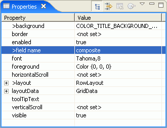

The Properties view shows the properties for the selected Java bean that is selected in either the Design view or the Java Beans view.
The list of these properties comes from introspection of the Java beans. Each property usually has a get and set method associated with it, and the value of each property is shown in the Properties view. To see the list of properties it may be necessary to enlarge the property sheet by making the workbench window larger or dragging the left edge of the Properties view.

The Properties
Parent topic: About the visual editor for Java
Related tasks
Changing component properties